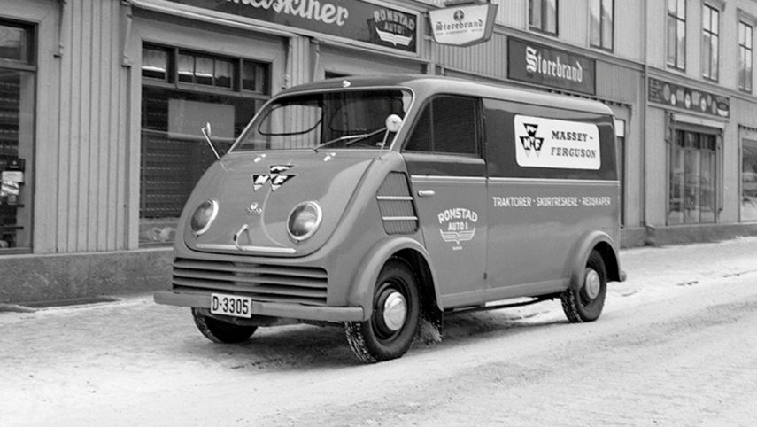
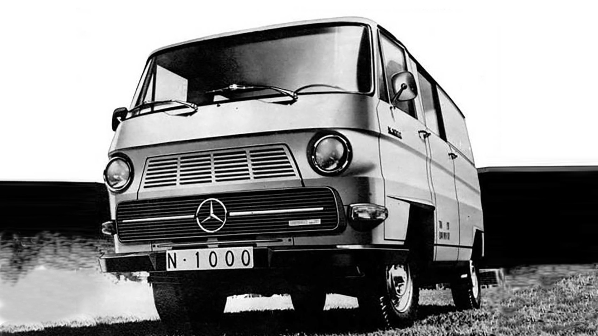
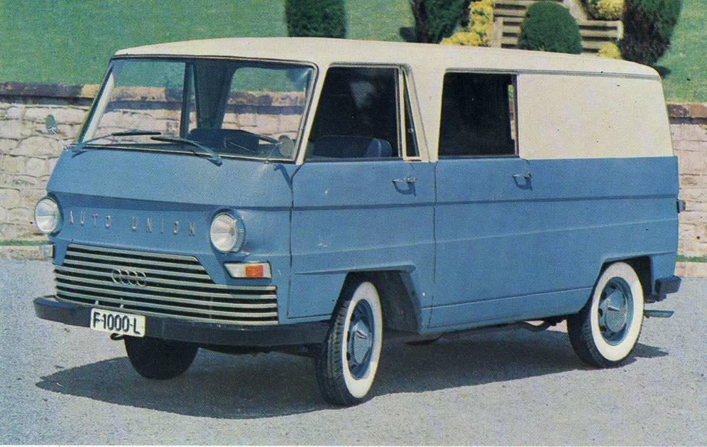
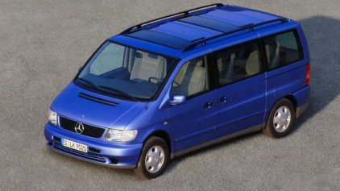

Industrias del Motor, S.A. (IMOSA), así comenzó su actividad el 17 de noviembre de 1950 en la que es hoy la única planta de Mercedes-Benz en España. Instalaciones situadas en Vitoria (País Vasco) que, además, son también las más antiguas de toda Europa continental y la segunda más grande del Grupo Daimler en el mundo en lo que a fabricación de furgonetas se refiere. Nada menos que 65 años dedicadas al montaje de vehículos industriales que comenzaron muy lejos de Mercedes, o quizá no tanto.
La fábrica comenzó con su sede social en Barcelona, ya que se quería aprovechar la licencia que tenía Automóviles Eucort S.A., una compañía fundada en junio de 1945 por Eusebio Cortés (de ahí su nombre, EUsebio CORTés), en las mismas instalaciones que tenía la también extinta Carrocerías Marrugat. La vida de Eucort fue corta, ya que en 1948 entró en suspensión de pagos y, en 1951, vio como IMOSA trasladaba su domicilio social a Vitoria.
Una vez en Vitoria, la empresa firmó su primer contrato con DKW, que por entonces era parte de Auto Union, o dicho de otro modo, lo que acabaría siendo Audi. El acuerdo les sirvió, con la ayuda del Ayuntamiento de Vitoria y la diputación alavesa, para adquirir 140.000 metros cuadrados de terreno entre Ali y Gobeo, donde se construirían sus pabellones en 1952.



No fue hasta 1954, concretamente el 20 de marzo de aquel año, cuando salió de la línea de montaje la primera unidad del DKW F89L. Hablamos de un pequeño furgón de reparto que acabó siendo tan típica como el SEAT 600 por las carreteras españolas y está considerada como pionera por su diseño tipo monovolumen. Dicho modelo también guarda cierto interés histórico, pues se trata del primer modelo que fabricó Auto Union tras la Segunda Guerra Mundial en Ingolstadt, donde se comenzó su fabricación en 1949.
La empresa tuvo varias etapas. El 3 de mayo de 1957 se constituyó, entre IMOSA e Industrias Mendoza, la empresa Industrias Auxiliares del Automóvil, S.A. (INAUTO), que se dedicaría a la construcción y al ensamblaje de carrocerías especiales para sus modelos en producción.
El 8 de enero de 1959 se creó Comercio e Industria Alaveses del Automóvil, S.A. (CIADASA), que estaría enfocada a la venta y distribución de los vehículos y en 1963, se obtuvo la exclusiva mundial para la fabricación de la furgoneta DKW F1000, otro modelo que acabó siendo muy popular en la España de la década de los 60. Un año después, en 1964, se comenzó a ofrecer el mismo modelo pero equipado con un motor diésel de Mercedes, cuya denominación comercial era la de DKW F1000.
Ya por entonces, Auto Union y Daimler-Benz operaban bajo el mismo techo, una “fusión” ideada por el empresario Friedrich Flick, quien tenía el 40 % de ambas compañías. Se llevó a cabo en 1958. Cuando Auto Unión comenzó a pasar por malos momentos, Daimler-Benz vendió parte de la compañía a Volkswagen en 1965. En ese momento, Volkswagen desechó la idea de fabricar vehículos industriales en esa factoría e intentó comenzar la producción de turismos, iniciativa que detuvo el Ministerio de Industria en 1966.
Después de esto se sucedieron varias adquisiciones. IMOSA se hizo con el control de Borgward-ISO Española, S.A. y tras una ampliación de IMOSA en 1968 y 1969, la empresa y todas sus filiales se fusionaron con la Compañía Hispano-Alemana de Productos Mercedes-Benz, conocida como CISPALSA.
En ese momento pasó a estar controlada por Daimler-Benz y dio lugar a la Compañía Hispano Alemana de Productos Mercedes-Benz y Volkswagen S.A. (MEVOSA). De esta forma, la fábrica de Vitoria se convirtió en la primera factoría de Mercedes-Benz fuera de Alemania.
Mientras tanto, todo seguía su curso y las furgonetas seguían saliendo de la línea de montaje hasta que, en 1975, la Mercedes N1000 ocupó el lugar de las DKW. Realmente era casi la misma DKW F1000, pero tenía el logo de Mercedes en el frontal y sufría pequeñas modificaciones.
Un año después, Mercedes y el Instituto Nacional de Industria (INI) adquirieron a partes iguales las acciones de Volkswagen y se lanzó la Mercedes N1300, una evolución de la N1000 que seguía teniendo sus raíces en la DKW F1000. La compañía alemana no tardó mucho en hacerse con el control de MEVOSA, controlando el 52,13 % del capital social en 1980 y cambiando su denominación en 1981 por Mercedes-Benz España S.A.
CIADASA pasó a ser Comercial Mercedes-Benz S.A., dejando de dar servicio al Grupo Volkswagen. En 1987 se lanzó la Mercedes MB100D, un modelo del que todavía se pueden ver unidades en circulación y que se puede considerar un icono del sector de los industriales ligeros. En 1989, Mercedes se hizo con el 87,55 % del capital y el INI abandonó la compañía.
En 1995 fue cuando se comenzó con la producción de la Mercedes Vito, llegando en 1996 el Mercedes Clase V. De este último, salió la unidad 222.222 el pasado mes de noviembre de 2019. Un ejemplar perteneciente a la última generación del modelo, cuya producción comenzó en marzo de 2014, recibiendo un restyling en 2019. Como curiosidad, la denominación de Vito viene por “VITOria”, nombre de la localidad donde se encuentra la factoría y, por eso, la versión para pasajeros se denomina “Clase V” (la V es por Vitoria, obviamente).

La fábrica de Vitoria-Gasteiz se estrucutura de la siguiente forma:
En la tabla siguiente se muestra la producción total de furgonetas en los últimos 5 años.
| Año | Cantidad | Diferencia |
|---|---|---|
| 2015 | 99.350 | - |
| 2016 | 135.400 | +36.050 |
| 2017 | 150.000 | +14.600 |
| 2018 | 146.012 | -3.988 |
| 2019 | 145.050 | -962 |
| 2020 | 128.700 | -16.350 |
945 18 86 60
Las Arenas, S/N - 01010 - Vitoria-Gasteiz (Álava)